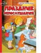

В книгу "Праздник Непослушания" вошли весёлые и поучительные сказки Сергея Михалкова: одноимённая сказка "Праздник Непослушания", "Три поросёнка", "Упрямый козлёнок", "Трусохвостик" и "Одноглазый дрозд". Герои сказок — дети и звери — попадают в очень опасные переделки. К примеру, в одном сказочном городе взрослые решают покинуть своих детей, чтобы показать им каково это — жить без старших. А один непослушный козлёнок оказывается на маленьком островке, где его вот-вот съедят голодные волки… Но в каждой сказке обязательно найдётся смелый и добрый друг, готовый спасти нерадивых героев. Рисунки народного художника РФ В. А. Чижикова. Для среднего школьного возраста.